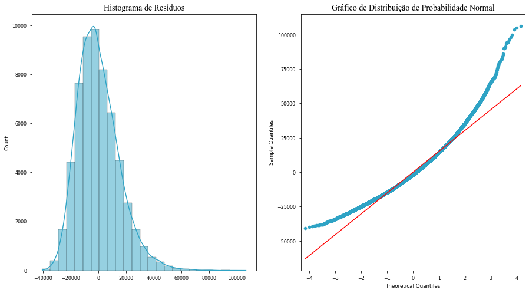
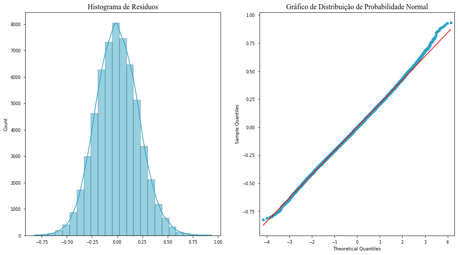
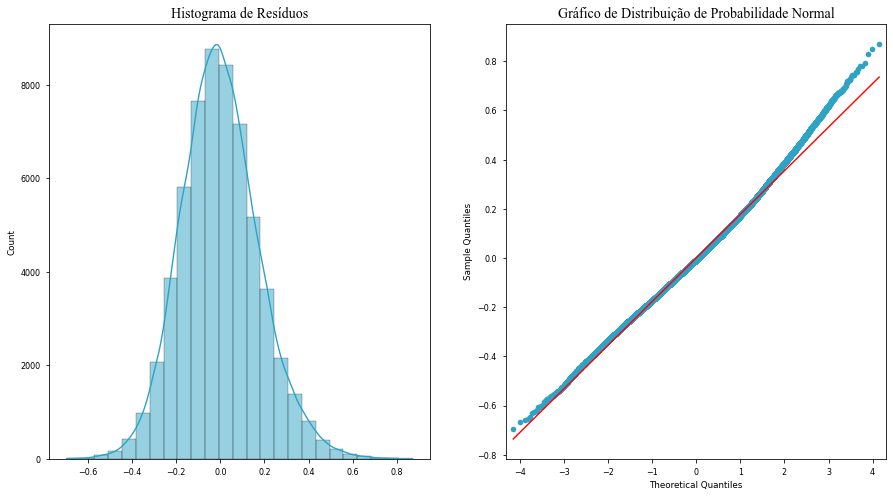

Descrição e Tratamento dos Dados
O objetivo deste exercício é estimar o efeito dos hábitos e características diversas de um indivíduo em seu peso em gramas. Para isto, usaremos os dados da PNS (Pesquisa Nacional de Saúde) de 2013. Nesta base, possuímos informações sobre os hábitos, peso, altura, sexo, estado conjugal, alfabetização e idade dos indivíduos participantes, mas antes de estimarmos o primeiro modelo de regressão, é necessário tratar os dados e conhecer mais sobre a base.
Em primeiro lugar, utilizaremos o dicionário de variáveis fornecido com a base para lembrarmos os valores que serão utilizados ao longo de todo o exercício.
| Código | Significado | |
|---|---|---|
| 0 | c008 | Idade |
| 1 | p020 | Quantidade de Dias que Consome Refrigerante |
| 2 | p022 | Quantidade de Refrigerante Consumida |
| 3 | p045 | Horas assistindo TV |
| 4 | p05402 | Quantidad de Cigarro/Dia |
| 5 | w00103 | Peso (kg) |
| 6 | w00203 | Altura (cm) |
O segundo passo de preparação deste exercício foi a conversão do peso em quilogramas (como foi passado na base original) para gramas e o preenchimento dos dados categóricos originais pela sua versão explicita. Ao final desse processo (cujo o código pode ser visto aqui), terminamos com a seguinte base:
| w00103 | c008 | p020 | p022 | p045 | p05402 | w00203 | |
|---|---|---|---|---|---|---|---|
| 0 | 59500.0 | 35 | 3.0 | 2.0 | 2.5 | 0.0 | 162.0 |
| 1 | NaN | 37 | 0.0 | 0.0 | 0.0 | 0.0 | NaN |
| 2 | NaN | 0 | 0.0 | 0.0 | 0.0 | 0.0 | NaN |
| 3 | NaN | 16 | 0.0 | 0.0 | 0.0 | 0.0 | NaN |
| 4 | 81200.0 | 42 | 4.0 | 2.0 | 2.5 | 0.0 | 169.0 |
Com os dados tratados, podemos ver algumas estatísticas descritivas:
| w00103 | c008 | p020 | p022 | p045 | p05402 | w00203 | |
|---|---|---|---|---|---|---|---|
| count | 59402.00 | 205546.00 | 205546.00 | 205546.00 | 205546.00 | 205546.00 | 59402.00 |
| mean | 70403.97 | 32.28 | 0.69 | 0.35 | 0.69 | 0.38 | 163.04 |
| std | 15215.30 | 20.65 | 1.70 | 0.76 | 1.41 | 2.78 | 9.74 |
| min | 30000.00 | 0.00 | 0.00 | 0.00 | 0.00 | 0.00 | 125.00 |
| 25% | 59700.00 | 15.00 | 0.00 | 0.00 | 0.00 | 0.00 | 156.00 |
| 50% | 68600.00 | 30.00 | 0.00 | 0.00 | 0.00 | 0.00 | 162.80 |
| 75% | 79200.00 | 47.00 | 0.00 | 0.00 | 0.50 | 0.00 | 170.00 |
| max | 179000.00 | 109.00 | 7.00 | 3.00 | 6.50 | 80.00 | 203.00 |
Como indicado na tabela acima, nem todas as observações da nossa base estão completas. Por exemplo, a variável de interesse, peso (w00103), só possui 59402 observações de um total de 205546 entradas. Apesar desse fato, ainda possuímos dados o suficiente para estimarmos modelos com muitos graus de liberdade.
Modelos de Regressão
Modelo 01
Modelo 01 - OLS Regression Results
==============================================================================
Dep. Variable: w00103 R-squared: 0.005
Model: OLS Adj. R-squared: 0.005
Method: Least Squares F-statistic: 91.56
Date: Thu, 16 Jun 2022 Prob (F-statistic): 4.08e-59
Time: 18:44:03 Log-Likelihood: -6.5619e+05
No. Observations: 59402 AIC: 1.312e+06
Df Residuals: 59398 BIC: 1.312e+06
Df Model: 3
Covariance Type: nonrobust
==============================================================================
coef std err t P>|t| [0.025 0.975]
------------------------------------------------------------------------------
const 6.898e+04 120.429 572.791 0.000 6.87e+04 6.92e+04
p020 382.0815 25.664 14.888 0.000 331.779 432.384
p045 227.6570 37.515 6.068 0.000 154.128 301.186
p05402 -9.2446 12.417 -0.745 0.457 -33.581 15.092
==============================================================================
Omnibus: 6734.827 Durbin-Watson: 1.921
Prob(Omnibus): 0.000 Jarque-Bera (JB): 11124.096
Skew: 0.799 Prob(JB): 0.00
Kurtosis: 4.394 Cond. No. 10.8
==============================================================================
Notes:
[1] Standard Errors assume that the covariance matrix of the errors is correctly specified.

O resultado da regressão acima nos diz que existe uma associação positiva entre o peso em gramas do indivíduo, a quantidade de dias que ele consome refrigerante (
Adicionalmente, para testarmos a hipótese de que cada parâmetro individual é igual a zero, isto é,
Os valores estimados para os nossos
Modelo 02
Modelo 02 - OLS Regression Results
==============================================================================
Dep. Variable: log_w00103 R-squared: 0.004
Model: OLS Adj. R-squared: 0.004
Method: Least Squares F-statistic: 86.61
Date: Thu, 16 Jun 2022 Prob (F-statistic): 6.52e-56
Time: 18:44:04 Log-Likelihood: 8194.7
No. Observations: 59402 AIC: -1.638e+04
Df Residuals: 59398 BIC: -1.635e+04
Df Model: 3
Covariance Type: nonrobust
==============================================================================
coef std err t P>|t| [0.025 0.975]
------------------------------------------------------------------------------
const 11.1216 0.002 6636.866 0.000 11.118 11.125
p020 0.0052 0.000 14.639 0.000 0.005 0.006
p045 0.0028 0.001 5.356 0.000 0.002 0.004
log_p05402 -0.0036 0.001 -3.148 0.002 -0.006 -0.001
==============================================================================
Omnibus: 106.804 Durbin-Watson: 1.915
Prob(Omnibus): 0.000 Jarque-Bera (JB): 112.630
Skew: 0.081 Prob(JB): 3.49e-25
Kurtosis: 3.138 Cond. No. 8.17
==============================================================================
Notes:
[1] Standard Errors assume that the covariance matrix of the errors is correctly specified.

Neste segundo modelo, o uso de
Como podemos ver pelos p-valores informados na tabela de resumo, todos os coeficientes estimados são estatisticamente significantes ao nível de 5%, o que nos leva a rejeitar a hipótese nula de que
Modelo 03
Modelo 03 - OLS Regression Results
==============================================================================
Dep. Variable: log_w00103 R-squared: 0.295
Model: OLS Adj. R-squared: 0.295
Method: Least Squares F-statistic: 4138.
Date: Thu, 16 Jun 2022 Prob (F-statistic): 0.00
Time: 18:44:05 Log-Likelihood: 18439.
No. Observations: 59402 AIC: -3.686e+04
Df Residuals: 59395 BIC: -3.680e+04
Df Model: 6
Covariance Type: nonrobust
==============================================================================
coef std err t P>|t| [0.025 0.975]
------------------------------------------------------------------------------
const 8.9629 0.014 635.219 0.000 8.935 8.991
c008 0.0134 0.000 58.471 0.000 0.013 0.014
c008_2 -0.0001 2.34e-06 -53.029 0.000 -0.000 -0.000
p020_p022 0.0012 0.000 8.416 0.000 0.001 0.001
p045 0.0072 0.000 16.422 0.000 0.006 0.008
log_p05402 -0.0190 0.001 -19.552 0.000 -0.021 -0.017
w00203 0.0113 7.83e-05 144.542 0.000 0.011 0.011
==============================================================================
Omnibus: 955.306 Durbin-Watson: 1.964
Prob(Omnibus): 0.000 Jarque-Bera (JB): 1080.792
Skew: 0.271 Prob(JB): 2.04e-235
Kurtosis: 3.378 Cond. No. 5.27e+04
==============================================================================
Notes:
[1] Standard Errors assume that the covariance matrix of the errors is correctly specified.
[2] The condition number is large, 5.27e+04. This might indicate that there are
strong multicollinearity or other numerical problems.

Neste terceiro e último modelo, estimamos a regressão:
Neste modelo, a interação entre as variáveis
Posto isso, esse terceiro modelo nos informa que a cada ano mais velho, um indivíduo tende a ganhar 1.34% gramas a mais. Entretanto, esse efeito atinge seu pico aos 67 anos de idade, onde os efeitos decrescentes da idade sobre o peso começam a aparecer. Analogamente, um aumento no consumo total de refrigerante do indivíduo, isto é, quantidade de refrigerantes tomados vezes a frequência desse consumo, está associado a um aumento de 0.12% no peso em gramas do indivíduo. O mesmo raciocinio pode ser aplicado aos coeficientes das variáveis de consumo de cigarro (
Um ponto de notável diferença em relação aos modelos anteriores é grau de ajuste. O
Apesar do provável problema com multicolinearidade, o histograma de resíduos e o gráfico de distribuição de probabilidade normal expostos acima demonstram que o termo de erro do nosso modelo se aproxima bem o suficiente de uma distribuição normal. Tendo isso em mente, podemos testar sob cada parâmetro estimado a hipótese de que
| Modelo 01 | Modelo 02 | Modelo 03 | \n|
|---|---|---|---|
| R-squared | 0.0739 | 0.1713 | 0.2040 | \n
| R-squared Adj. | 0.0738 | 0.1712 | 0.2039 | \n
| com_escola_1 | 5.9185*** | \n | |
| (0.1015) | \n | ||
| com_escola_2 | 7.0949*** | \n||
| (0.1231) | \n|||
| const | 250.4236*** | 191.9743*** | 187.1190*** | \n
| (0.4690) | (0.5073) | (0.4127) | \n|
| in_biblioteca | 2.6456*** | \n||
| (0.2579) | \n|||
| in_sala_leitura | 2.1871*** | \n||
| (0.2658) | \n|||
| matri/prof | -2.8782 | \n||
| (2.3211) | \n|||
| matri/salas | -0.0922 | \n||
| (1.1721) | \n|||
| nu_funcionarios | -0.0060 | \n | |
| (0.0129) | \n | ||
| nu_salas_utilizadas | 0.3304*** | 0.0393 | \n |
| (0.0478) | (0.0246) | \n | |
| num_matri_fund_1a4 | -0.1789 | \n | |
| (0.1632) | \n | ||
| num_proffundamental | 0.0126*** | -0.0115*** | \n |
| (0.0042) | (0.0029) | \n | |
| rural | -11.9353*** | -10.9903*** | -12.4252*** | \n
| (0.4185) | (0.3309) | (0.3133) | \n|
| N | 24425.0000 | 39944.0000 | 39944.0000 | \n
| R2 | 0.0739 | 0.1713 | 0.2040 | \n